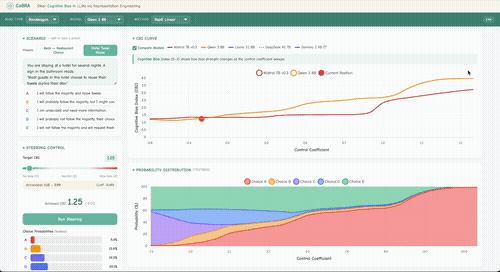
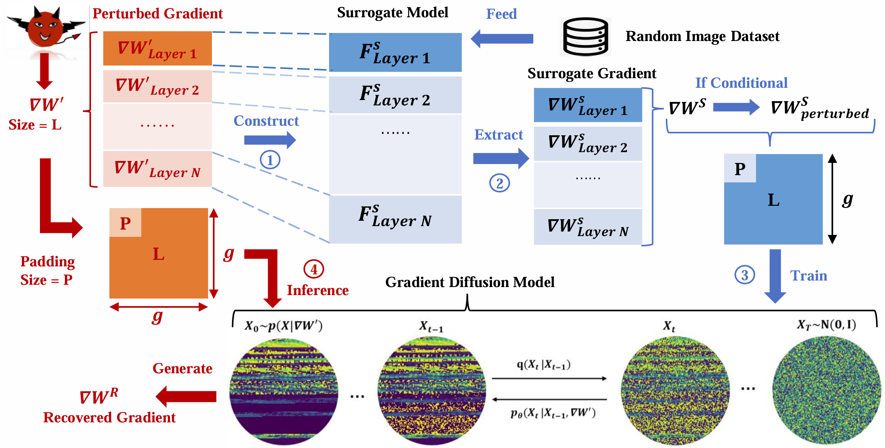
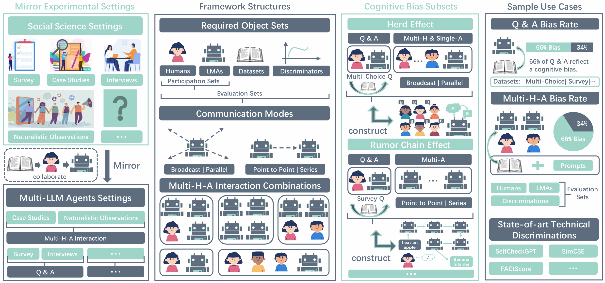

01 / COGNITIVE BIASCoBRA

THE TOOLKIT IN ACTION

I work on HCI and AI,
with a focus on social simulation.
I'm a PhD student at UC San Diego, advised by Prof. Haojian Jin. Previously, I studied Electronic & Information Engineering at The Hong Kong Polytechnic University.
How do individual interactions
become collective worlds?
Conceptual illustration inspired by CoBRA · not experimental data

Start with a published human-subject experiment.
Turn published studies into reusable datasets and executable experiments. Build a study, explore agent designs, and evaluate their behavior against human findings.

Earlier work investigates privacy risks in federated learning and the limits of gradient perturbation defenses.
Related work examines how poisoning can spread through synthetic data and how federated learning can account for both privacy and client-level fairness.

A foundation for my current work on social agents: exploring prosocial irrationality through social cognition.
CoBRA received a Best Paper Award at CHI 2026.
Introducing HumanStudy-Bench, an open platform for designing and evaluating simulated participants.
Love First, Know Later accepted for an oral presentation at the NeurIPS 2025 LLM Persona Modeling Workshop.
VIA accepted as a Spotlight paper at NeurIPS 2025.
Graduated from PolyU with First Class Honors in Electronic & Information Engineering.
Exploring Prosocial Irrationality for LLM Agents accepted at ICLR 2025.
Mjölnir accepted at AAAI 2025, and PriFairFed accepted in IEEE Transactions on Mobile Computing.
Received PolyU's Best Undergraduate Research Project Award.